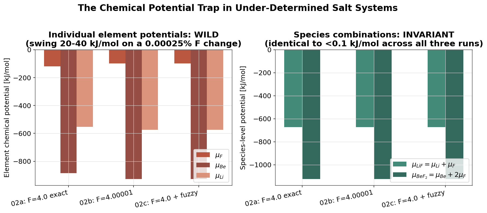
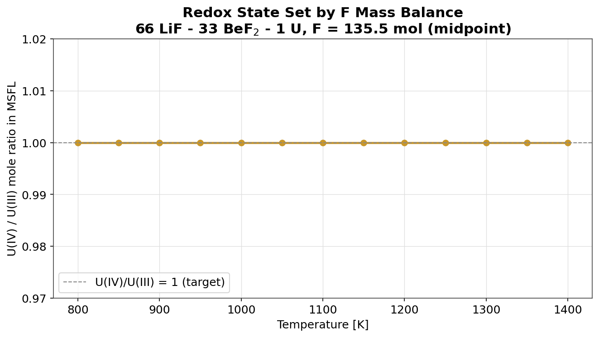
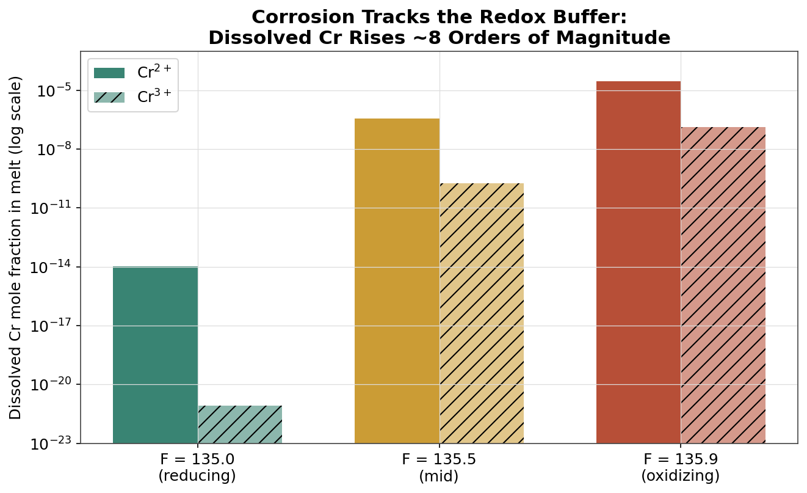
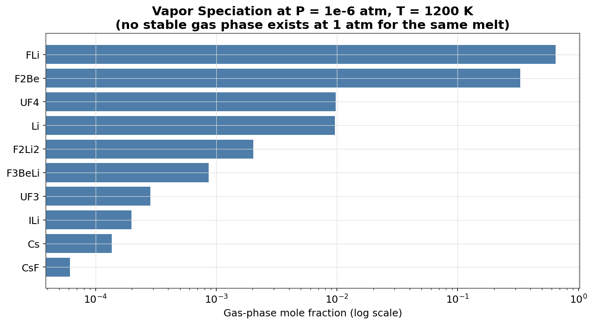

This session uses Thermochimica with the MSTDB-TC version 4.1 fluoride database. It computes the equilibrium speciation, redox state, corrosion behavior, and off-gas composition of a molten fluoride salt. Every number in this deck comes from a calculation run on a stated input file.
Scope: standalone Thermochimica. A separate session covers the MOOSE coupling.
G is the Gibbs energy of the system. The solver finds phase and species amounts that drive dG as close to zero as its tolerance allows. The program reports a functional norm that states how close dG is to zero at the solution. A smaller functional norm is a tighter solution.
The mass balance is 2 moles of lithium, 1 mole of beryllium, and 4.00001 moles of fluorine. This ratio is close to 2 LiF plus 1 BeF₂, the eutectic composition of the LiF-BeF₂ system. Segment 3 explains the extra 0.00001 mole of fluorine.
! 01_flibe_basic.ti temperature = 900 pressure = 1.0 mass(3) = 2.0 ! lithium mass(4) = 1.0 ! beryllium mass(9) = 4.00001 ! fluorine data file = data/MSD-TC_V4.1_Fluorides_No_Func.dat
Command: ./bin/InputScriptMode inputs/training/saltfoss/01_flibe_basic.ti
| MSFL, the molten salt liquid | 5.0148 mol |
| gas_ideal | 5.08×10⁻⁶ mol |
| Functional norm | 1.55×10⁻⁶ |
| Exit status | successful |
The input stated 2 lithium, 1 beryllium, and 4.00001 fluorine. It did not state LiF or BeF₂. The program found those two species by minimizing Gibbs energy.
Source: Piro, Poschmann, and Bajpai, Journal of Nuclear Materials, volume 526, page 151756, 2019.
| Run | μ_F (kJ/mol) | μ_Be (kJ/mol) | μ_Li (kJ/mol) |
|---|---|---|---|
| 1. Exact stoichiometry, F = 4.0 mol | −118.9 | −885.0 | −553.2 |
| 2. Perturbed, F = 4.00001 mol | −97.9 | −927.1 | −574.2 |
| 3. Fuzzy stoichiometry, F = 4.0 mol | −97.9 | −927.1 | −574.2 |
The integral Gibbs energy of the system is identical in all three runs: −2.46715×10⁶ J. The element chemical potentials are not identical.
For μ(LiF) and μ(BeF₂) to stay fixed while μ_F changes by an amount Δμ_F, the other two element potentials must change to cancel that amount exactly.
| Quantity (run 2 minus run 1) | Measured | Predicted |
|---|---|---|
| Δμ_F | +21.01 kJ/mol | — |
| Δμ_Li ÷ Δμ_F | −0.998 | −1 |
| Δμ_Be ÷ Δμ_F | −2.004 | −2 |
The measured ratios match the predicted values to within 0.4%. The set of changes (Δμ_F, Δμ_Li, Δμ_Be) = (1, −1, −2)·Δμ_F is the null space of the stoichiometry matrix for this system. A change along this direction leaves every species chemical potential, and the total Gibbs energy, unchanged.
| Run | μ(LiF) = μ_Li + μ_F | μ(BeF₂) = μ_Be + 2μ_F |
|---|---|---|
| 1. Exact stoichiometry | −672.14 kJ/mol | −1122.87 kJ/mol |
| 2. Perturbed | −672.10 kJ/mol | −1122.95 kJ/mol |
| 3. Fuzzy stoichiometry | −672.10 kJ/mol | −1122.95 kJ/mol |
All three runs agree to under 0.1 kJ/mol.
Rule: do not report or use the chemical potential of a single element from a calculation on a stoichiometric molten salt. Report or use the chemical potential of a species instead.
If an element chemical potential is required, remove the under-determined condition first, by one of three methods:
fuzzy = .TRUE. in the input file. This option adds a small random change, by default ±1×10⁻¹² mole, to each nonzero entry of the stoichiometry matrix before the solver runs.Caution: the fuzzy stoichiometry option can place a small, non-physical amount of an extra phase into the result. Check the phase assemblage after use.

The next three runs hold lithium, beryllium, and uranium fixed. Only the fluorine mass balance changes. UF₃ needs three fluorine atoms for each uranium atom. UF₄ needs four. The fluorine remaining after lithium and beryllium take their share sets the mean oxidation number of uranium.
v̄ is the mean oxidation number of uranium: the oxidation number of uranium, averaged over every form of uranium present, weighted by the amount of each form. With n_Li = 66 mol and n_Be = 33 mol, lithium and beryllium consume 66 + 2×33 = 132 mol of fluorine as LiF and BeF₂. The remaining fluorine goes to uranium.
| Run | n_F (mol) | Remaining F (mol) | v̄ |
|---|---|---|---|
| F = 135.0 | 135.0 | 3.0 | 3.00 |
| F = 135.5 | 135.5 | 3.5 | 3.50 |
| F = 135.9 | 135.9 | 3.9 | 3.90 |
| Run | x(U³⁺) | x(U⁴⁺) | Computed v̄ = 3·x(U³⁺) + 4·x(U⁴⁺) |
|---|---|---|---|
| F = 135.0 | 0.999818 | 0.000182 | 3.000182 |
| F = 135.5 | 0.500000 | 0.500000 | 3.500000 |
| F = 135.9 | 0.100000 | 0.900000 | 3.900000 |
x(U⁴⁺) is the sum of the U[CN=VI], U[CN=VII], and U[Dimer] cation fractions. U[Dimer] is counted twice, because each dimer unit holds two uranium atoms.
The computed mean oxidation number matches the mass balance ratio set on input, to four decimal places or better in every run. The fluorine mass balance chosen on input is the redox state of the uranium on output. This is a direct, checkable identity, not an approximation.
R is the gas constant, 8.314 J/(mol·K). T is the absolute temperature. μ_F° is a reference value fixed by the melt composition and the database. The log of the redox ratio is linear in the fluorine chemical potential.
| Run | μ_F (kJ/mol) | ln[x(U⁴⁺)/x(U³⁺)] measured |
|---|---|---|
| F = 135.0 | −534.94 | −8.613 |
| F = 135.5 | −469.66 | 0.000 |
| F = 135.9 | −452.60 | 2.197 |
At T = 900 K, RT = 7483 J/mol. A least-squares fit of ln(ratio) against μ_F over these three points gives a slope of 1.31×10⁻⁴ mol/J. The predicted slope is 1/RT = 1.336×10⁻⁴ mol/J. The fitted value and the predicted value agree to within 2%. The remaining difference comes from the melt not being an ideal solution.
13 points, 800 K to 1400 K, in 50 K steps, computed in about 4.8 seconds. U(IV)/U(III) = 1.000 at every temperature, because F = 135.5 mol sets v̄ = 3.5 at every temperature. The mass balance does not depend on temperature.

Two points matter for code that reads the JSON output of a molten salt phase.
U[CN=VII instead of U[CN=VII], and Be[Dimer instead of Be[Dimer]. A name ending in [Dimer represents two atoms bound as one unit.print(list(d['1']['solution phases']['MSFL'].keys()))
['phase model', 'moles', 'driving force',
'cations', 'anions', 'moles of endmembers',
'endmembers', 'quadruplets', 'elements']
The next three runs add 0.01 mole of chromium metal to the same salt. Chromium stands in for a structural alloy in contact with the molten salt. Only the fluorine mass balance changes between the three runs, exactly as in Segment 4. Chromium corrosion in a fluoride melt proceeds by a reaction with the uranium redox buffer.
Each reaction fixes an equilibrium constant, K₂ for the first and K₃ for the second, in terms of mole fractions.
| Run | Cr_BCC(s), mol | Cr dissolved, mol | Percent of Cr dissolved |
|---|---|---|---|
| F = 135.0, reducing | 1.000×10⁻² | 9.41×10⁻¹³ | 0.0000% |
| F = 135.5, mid | 9.968×10⁻³ | 3.18×10⁻⁵ | 0.318% |
| F = 135.9, oxidizing | 7.495×10⁻³ | 2.50×10⁻³ | 25.05% |
A quarter of the chromium metal dissolves into the salt at the oxidizing end point, against essentially none at the reducing end point.
| F input (mol) | Cr²⁺ mole fraction | Cr³⁺ mole fraction |
|---|---|---|
| 135.0 | 1.08×10⁻¹⁴ | 8.56×10⁻²² |
| 135.5 | 3.65×10⁻⁷ | 1.82×10⁻¹⁰ |
| 135.9 | 2.87×10⁻⁵ | 1.35×10⁻⁷ |
| Run | UF₄/UF₃ ratio | x(Cr²⁺) | ÷ ratio² | x(Cr³⁺) | ÷ ratio³ |
|---|---|---|---|---|---|
| F = 135.0 | 1.82×10⁻⁴ | 1.08×10⁻¹⁴ | 3.27×10⁻⁷ | 8.56×10⁻²² | 1.42×10⁻¹⁰ |
| F = 135.5 | 1.000 | 3.65×10⁻⁷ | 3.66×10⁻⁷ | 1.82×10⁻¹⁰ | 1.82×10⁻¹⁰ |
| F = 135.9 | 8.522 | 2.87×10⁻⁵ | 3.95×10⁻⁷ | 1.35×10⁻⁷ | 2.18×10⁻¹⁰ |
The column x(Cr²⁺) ÷ ratio² stays close to 3.3–3.9×10⁻⁷ across three runs that span five orders of magnitude in the UF₄/UF₃ ratio. A least-squares fit of log[x(Cr²⁺)] against log(ratio) gives a slope of 2.02. A matching fit for x(Cr³⁺) gives a slope of 3.04. Both match the integer reaction orders, 2 and 3, predicted by the electron count in the two reactions.

Dissolved chromium rises by about nine orders of magnitude from the most reducing run to the most oxidizing run. It rises as a power of the uranium redox ratio, with the exact exponent the reaction chemistry predicts. This relation is the kind of quantity a coupled corrosion model needs as a boundary condition, covered in a separate session.
The next two runs add small amounts of cesium and iodine to the same base salt. Cesium and iodine stand in for two volatile fission products. A gas phase becomes stable only when the total vapor pressure the melt would exert, at the given temperature and composition, reaches the system pressure. The pressure at which this first happens is the bubble point.
| Run at 1 atmosphere | Value |
|---|---|
| MSFL | 164.25 mol |
| Stable pure condensed phases | 1 |
| Stable solution phases | 1 |
| gas_ideal | not stable |
A bracket search at 1200 K, with this composition, narrows the bubble point to between 2.2×10⁻³ atm and 2.4×10⁻³ atm. This melt does not boil anywhere near 1 atmosphere. A calculation run at 1 atmosphere will state nothing about volatile release, for this salt, at this temperature.
| Species | Mole fraction |
|---|---|
| FLi, carrier | 0.647 |
| F2Be, carrier | 0.330 |
| UF4 | 9.72×10⁻³ |
| Li | 9.58×10⁻³ |
| F2Li2 | 2.03×10⁻³ |
| F3BeLi | 8.64×10⁻⁴ |
| UF3 | 2.85×10⁻⁴ |
| ILi | 1.99×10⁻⁴ |
| Cs | 1.36×10⁻⁴ |
| CsF | 6.13×10⁻⁵ |
| CsI | 1.24×10⁻⁶ |

The two carrier species, FLi and F2Be, hold 97.7% of the gas phase. These come from the bulk salt, not from the fission products. The uranium, cesium, and iodine species are a small part of the vapor by mole fraction, but they are present, with a defined composition, at any pressure below the bubble point.
doc/thermochimica_user_manual.pdf, section 3.9, "Fuzzy Stoichiometry."doc/training/saltfoss-detailed-script.md — the full presenter script, with every derivation in this deck stated in full.doc/training/saltfoss-runsheet.md — the short, timing-focused version of the script, for use during the live session.doc/training/saltfoss-handout.md — the attendee one-page reference.doc/numerical_tolerances.md — the minimum resolvable mole fraction and solver conditioning.A separate session covers the MOOSE coupling: the C and C++ API, reinitialization for per-timestep calls, and how the redox and corrosion results from this session serve as boundary conditions in a coupled transport calculation.